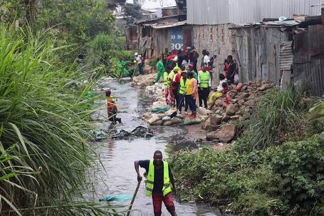

Community Participation Matters
Proper waste managment requires cooperation among residents, land lords, business owners, waste collectors and community leaders. Everyone has a role to play in keeping the environment clean.

Ways to improve our Community
Public Awareness
Share information about proper waste disposal and encourage proper environmental practices.
Responsible Businesses
Shops, restaurants and market vendors should manage their own waste responsibly and use appropriate collection services.
Community clean-ups
Residents can participate in organised cleaning activities to remove improperly disposed waste from shared spaces.
Community waste managment updates
Waste Separation Updates
Commuity members are encouraged to separate organic and recyclable waste where suitable collection facilities exist.
Information notice
Learn about waste separationKeep drainage channels clear
Avoid disposing of rubbish in drainage channels because accumulated waste obstruct water flow.
Community reminder
Learn MoreReport waste concerns
Residents can use website's demonstration reporting form to describe waste managment problems.
Website information
Report a waste problemLets Work Together
A cleaner community begins with responsible decisions made by individuals and organisations.
Learn proper waste disposalWaste Collection Service Providers
Residents and businesses can contact the relevant waste collection service provider for enquires about waste collection services.
Nabugabo Updeal Joint Venture
Service Area:
Kampala Central Division
Contact waste collection service provider for enquiries about waste collection arrangements and related waste managment services.
Call service provider Contact ProviderNeed General waste managment assistance
For general information and additional assistance, community members can contact Kampala Capital City Authority(KCCA)
Contact KCCA